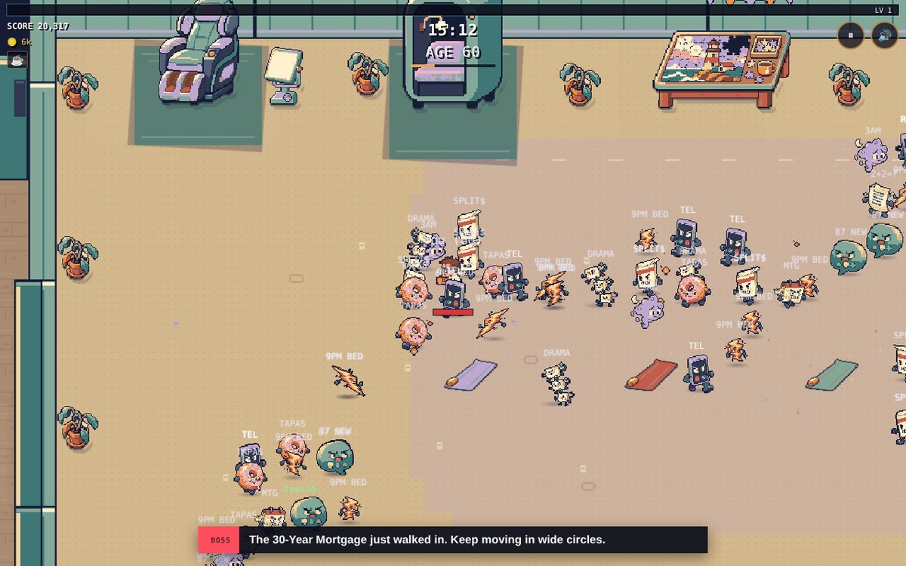
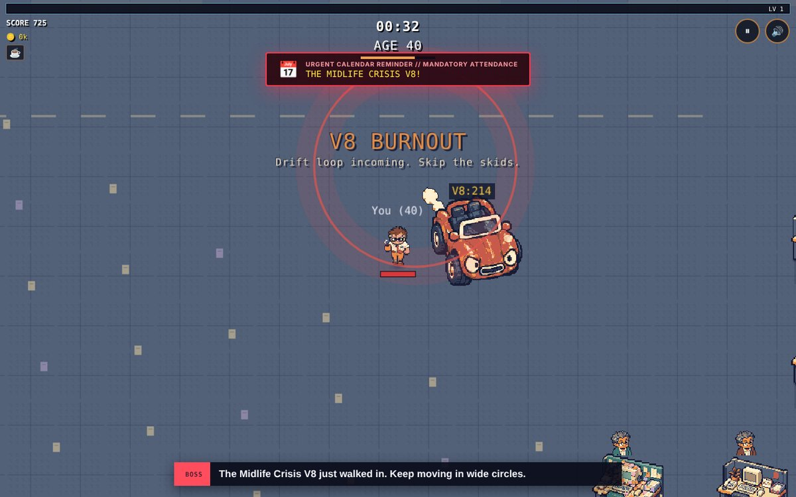
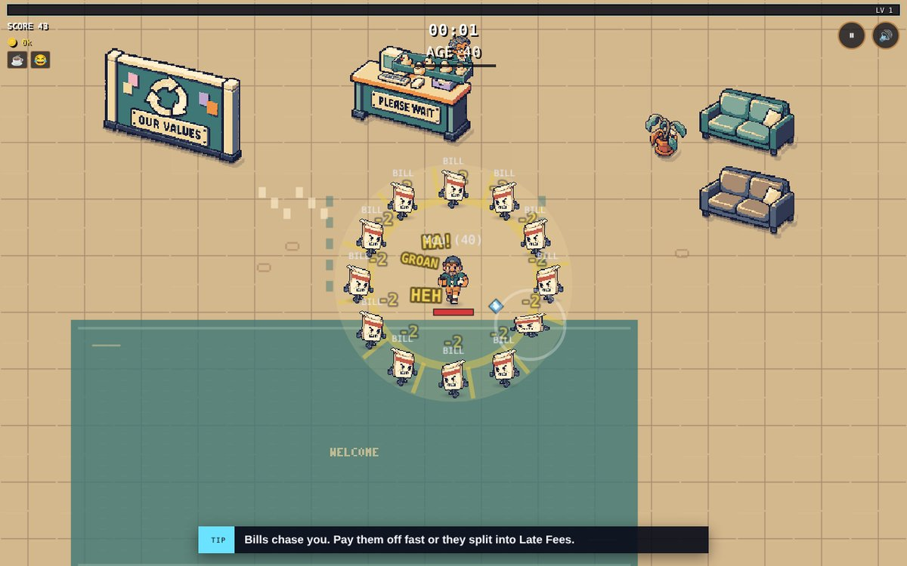
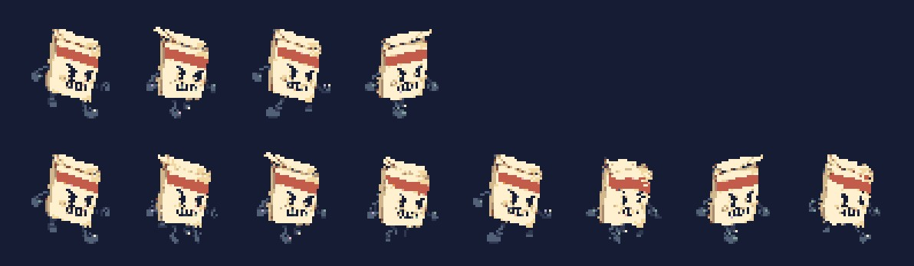
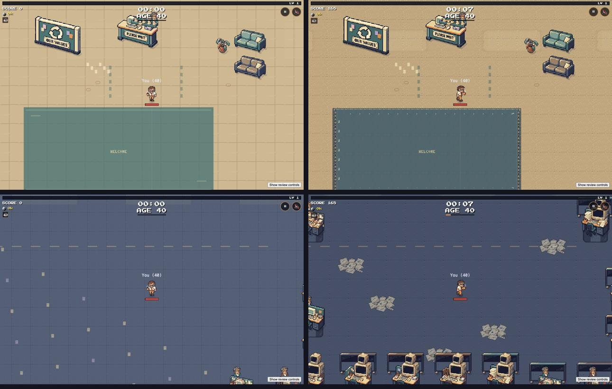

Last night my game was two rooms and a locked door. Today you can get promoted four times before lunch.
That's the big one. Every five years you get promoted, a door rolls up like a garage, and the office gets bigger. You start in the Lobby and the Bullpen. At 45 the Parking Lot and Break Room open. At 50, the Server Room and three glass Conference Rooms. At 55, the Executive Wing. At 60, the Wellness Corner, which HR built so you'd stop asking about raises.1Each promotion also tells you what followed you to work. At 50 it's tuition, carpool and the kids' new math. Life doesn't stay home just because you went to the office.
ChatGPT built all six rooms in one day. I'd write a brief, it would build the room, I'd test it, and Claude would wire the door. Then we'd do the next one. It felt less like making a game and more like running a very fast, very strange construction crew.

Everything breaks now
I played a game called Nerd Survivors and noticed that almost everything in it is breakable. So now almost everything in my office is too. Printers, vending machines, filing cabinets, water coolers, even the lost and found. Smash them for pizza, coins and XP. The printer has a message when it goes down: "PC Load Letter, my foot."
The bosses got bigger, and they finally fight back. The Performance Review charges at you. The 30-Year Mortgage sends out rings of interest. And the Midlife Crisis V8 does donuts in the parking lot and leaves skid marks you really don't want to stand in.

"They ran away if I got close"
My friends Derek and T.J. both sent me the same bug on the same day. Enemies were lining up along a wall, and when Derek walked toward them, they backed away. He sent a screenshot. Claude couldn't make it happen. Then I sent a screen recording. Still couldn't make it happen.
It turned out to be two bugs wearing the same trench coat.
The first one: my "No." weapon shoves enemies 95 pixels away from you. It did that by teleporting them. Physics only stops things that walk into a wall, so a teleported Bill could land on the other side of a thin wall and get stuck there, lining up along it forever. Games call this tunneling. The fix was to move them in small steps and stop at the first wall.
// Shove an enemy in small steps, stopping before a wall or the edge of the floor.
while (moved < dist) {
const nx = e.x + dx * 8, ny = e.y + dy * 8;
if (!NAV.isOpen(nx, ny) || !startArea.contains(nx, ny)) break;
e.x = nx; e.y = ny; moved += 8;
}
The second one was sneakier. If an enemy stood directly behind something wide, like the big desk in the Executive Wing, "go around the left" and "go around the right" were exactly as good as each other. The two choices cancelled out, and what was left over pointed straight back. So the enemy walked away from you, down the middle, until it hit a wall. ChatGPT actually caught this one while testing its room and left a note instead of fixing it. Now every enemy has a favorite side and just picks it.2My favorite kind of bug: the code was doing exactly what I told it to. I just hadn't told it what to do when both answers are right.
Every weapon has a job
I asked a simple question: is Dad Joke supposed to be offensive or defensive? Nobody could answer, including me. It and the word "No." were basically the same weapon, two small circles that pushed things.
So Dad Joke became an attack. It's a punchline blast now, with a flash, a shockwave and little "HA!"s flying off, and it hits for double damage. "No." stayed the personal-space tool. Then Grok went through all six weapons and gave each one a job, so every level-up card is an honest choice.

It all moves smoother now
Every enemy used to walk on four frames. Now it's eight. Same speed, just smoother. The heroes got eight frames too, plus something I didn't know I wanted: if you stand still, they breathe. Wait a few seconds and the 9-to-5er pushes his glasses up his nose.

The office got a pass too. The Bullpen went from an empty floor to rows of CRT monitors and paper drifts. Small icons replaced the phone emoji on every level-up card. And the coworkers finally move. They type, they nap, they look up when you walk by.

Next up
Honestly? I don't love the office yet. It still looks like one desk copied forty times, and the coworkers float behind their cubicle walls instead of sitting in their chairs. So before anything else gets built, ChatGPT is drawing two layout plans for me to pick from: team pods with their own personalities, a landmark on every screen, people at the water cooler. My photographer brain is very excited about this part.
If you played this week, thank you, especially Derek, T.J., Ben, Jon, Mike and Rich, who found the bugs I couldn't. If you haven't, see if you can make it to the Wellness Corner. And come tell me about it in the Discord.